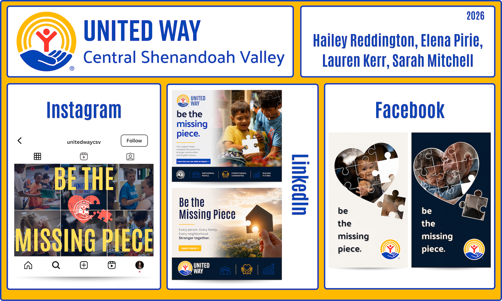

Over the course of several months during our junior year at James Madison University, my group members and I developed a comprehensive campaign for the United Way of Central Shenandoah Valley. Our primary objective was to promote the organization’s subscription-based donation service to audiences who respond more strongly to practical, solution-oriented messaging than emotionally driven visuals. The campaign slogan, “Be the Missing Piece,” positioned recurring donations as a meaningful and accessible contribution that could fit naturally into an individual’s everyday routine.
We designed the campaign to integrate seamlessly across the client’s Instagram, Facebook, and LinkedIn platforms while maintaining a consistent visual identity and message. The final deliverables included six Instagram posts, two LinkedIn advertisements, two Facebook advertisements, and five additional Instagram and Facebook short-form videos that are not pictured.